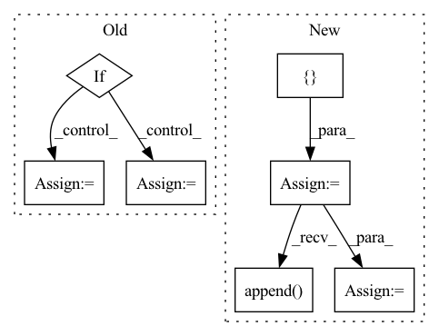

Pattern ID :1676
Before Change
if bilinear_upsample:
upsample_klass = partial(InterpolateUpsample, mode = "bilinear")
elif :
upsample_klass = partial(InterpolateUpsample, mode = "nearest")
else:
upsample_klass = Upsample
// upsampling layers
After Change
// downsampling layers
skip_connect_dims = [] // keep track of skip connection dimensions
for ind, ((dim_in, dim_out), layer_num_resnet_blocks, groups, layer_attn, layer_cross_attn) in enumerate(zip(in_out, *layer_params)):
is_last = ind >= (num_resolutions - 1)
layer_use_linear_cross_attn = not layer_cross_attn and use_linear_cross_attn
layer_cond_dim = cond_dim if layer_cross_attn or layer_use_linear_cross_attn else None
transformer_block_klass = TransformerBlock if layer_attn else (LinearAttentionTransformerBlock if use_linear_attn else nn.Identity)
current_dim = dim_in
// whether to pre-downsample, from memory efficient unet
pre_downsample = None
if memory_efficient:
pre_downsample = downsample_klass(dim_in, dim_out)
current_dim = dim_out
skip_connect_dims.append( current_dim)
self.downs.append(nn.ModuleList([
pre_downsample,
ResnetBlock(current_dim, current_dim, cond_dim = layer_cond_dim, linear_attn = layer_use_linear_cross_attn, time_cond_dim = time_cond_dim, groups = groups),
nn.ModuleList([ResnetBlock(current_dim, current_dim, time_cond_dim = time_cond_dim, groups = groups, use_gca = use_global_context_attn) for _ in range(layer_num_resnet_blocks)]),
transformer_block_klass(dim = current_dim, heads = attn_heads, dim_head = attn_dim_head, ff_mult = ff_mult),
downsample_klass(current_dim, dim_out) if not memory_efficient and not is_last else None,
]))
// middle layers
mid_dim = dims[-1]
self.mid_block1 = ResnetBlock(mid_dim, mid_dim, cond_dim = cond_dim, time_cond_dim = time_cond_dim, groups = resnet_groups[-1])
self.mid_attn = EinopsToAndFrom("b c h w", "b (h w) c", Residual(Attention(mid_dim, **attn_kwargs))) if attend_at_middle else None
self.mid_block2 = ResnetBlock(mid_dim, mid_dim, cond_dim = cond_dim, time_cond_dim = time_cond_dim, groups = resnet_groups[-1])
// upsampling layers
for ind, ((dim_in, dim_out), layer_num_resnet_blocks, groups, layer_attn, layer_cross_attn) in enumerate(zip(reversed(in_out), *reversed_layer_params)):
is_last = ind == (len(in_out) - 1)
layer_use_linear_cross_attn = not layer_cross_attn and use_linear_cross_attn
layer_cond_dim = cond_dim if layer_cross_attn or layer_use_linear_cross_attn else None
transformer_block_klass = TransformerBlock if layer_attn else (LinearAttentionTransformerBlock if use_linear_attn else nn.Identity)
skip_connect_dim = skip_connect_dims.pop()
self.ups.append(nn.ModuleList([
ResnetBlock(dim_out + skip_connect_dim, dim_out, cond_dim = layer_cond_dim, linear_attn = layer_use_linear_cross_attn, time_cond_dim = time_cond_dim, groups = groups),In pattern: SUPERPATTERN
Frequency: 3
Non-data size: 7
Instances Fragment ID: 4334912
Project Name: lucidrains/imagen-pytorch
Commit Name: 36bdefca0e8670ca42b39236315121b703b9533f
Time: 2022-06-27
Author: lucidrains@gmail.com
File Name: imagen_pytorch/imagen_pytorch.py
M Class Name: Unet
N Class Name: Unet
M Method Name: __init__(1)
N Method Name: __init__(1)
M Parent Class: nn.Module
N Parent Class: nn.Module
M File Name: imagen_pytorch/imagen_pytorch.py
N File Name: imagen_pytorch/imagen_pytorch.py
M Start Line: 1178
M End Line: 1250
N Start Line: 1148
N End Line: 1221
Before Change
super().__init__()
inner_dim = int(dim * ff_mult)
if ffn_type == "GEGLU":
self.net = nn.Sequential(
GEGLU(dim, inner_dim),
nn.Dropout(dropout),
nn.Linear(inner_dim, dim)
)
elif ffn_type == "standard":
self.net = nn.Sequential(
nn.Linear(dim, inner_dim),
nn.GELU(),
nn.Dropout(dropout),
nn.Linear(inner_dim, dim)
)
elif ffn_type == "bilinear":
self.net = nn.Sequential(
Bilinear(dim, inner_dim),
nn.Dropout(dropout),
nn.Linear(inner_dim, dim)After Change
upper_tri_rows = rearrange(upper_tri_rows, "i j -> () i j")
slopes = self._get_slopes(heads=int(heads / 2))
all_rows = []
for h_ in range(int(heads / 2)):
all_rows.append( lower_tri_rows * slopes[h_])
all_rows.append(upper_tri_rows * slopes[h_])
// The resultant bias applies the Alibi position bias looking forward to half of the heads, and backwards to the
// other half. Since for each head, only 1 direction contains positional information, you should probably use
// RoPE along with Alibi, to give the opposite direction some positional information.
self.bias = torch.cat(all_rows, dim=0).cuda() // shape (heads, max_length, max_length)
@staticmethod
def _get_slopes(heads): Fragment ID: 4334922
Project Name: antofuller/configaformers
Commit Name: f2fa8c59ce1537b400a3288f9c556e84ca993807
Time: 2021-09-04
Author: afuller187187@gmail.com
File Name: building_blocks.py
M Class Name: FeedForward
N Class Name: Alibi
M Method Name: __init__(3)
N Method Name: __init__(5)
M Parent Class: nn.Module
N Parent Class: nn.Module
M File Name: building_blocks.py
N File Name: building_blocks.py
M Start Line: 58
M End Line: 103
N Start Line: 17
N End Line: 57
Before Change
raise TypeError("Unknown Type:\t{}".format(norm))
self.norm0 = norm(out_channels)
if self.concat:
if self.mode == "res_mask":
k= 2*out_channels + 1
else:
k = 2*out_channels
self.conv1 = conv3x3(k, out_channels)
self.norm1 = norm(out_channels)
else:
self.conv1 = conv3x3(out_channels, out_channels)
self.norm1 = norm(out_channels)After Change
// residual structure
self.conv2 = []
self.conv3 = []
for i in range(blocks):
self.conv2.append(
nn.Sequential(*[
nn.Conv2d(out_channels // 2 + 1, out_channels // 4, 5, 1, 2),
nn.ReLU(True),
nn.Conv2d(out_channels // 4, 1, 5, 1, 2),
nn.Sigmoid()
])
)
self.conv3.append( conv3x3(out_channels // 2, out_channels))
self.bn = []
for _ in range(blocks):
self.bn.append(norm(out_channels))
self.bn = nn.ModuleList(self.bn)
self.conv2 = nn.ModuleList(self.conv2)
self.conv3 = nn.ModuleList(self.conv3)
self.act = act
def forward(self, from_up, from_down, mask=None): Fragment ID: 4334936
Project Name: bcmi/slbr-visible-watermark-removal
Commit Name: 43e84b70895d28955496122816e50857863e5bfd
Time: 2022-01-04
Author: lj200820082007@163.com
File Name: src/networks/blocks.py
M Class Name: MBEBlock
N Class Name: MBEBlock
M Method Name: __init__(10)
N Method Name: __init__(10)
M Parent Class: nn.Module
N Parent Class: nn.Module
M File Name: src/networks/blocks.py
N File Name: src/networks/blocks.py
M Start Line: 208
M End Line: 235
N Start Line: 208
N End Line: 248